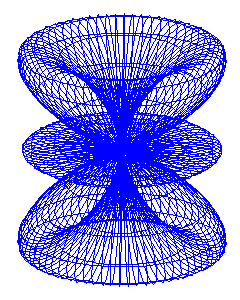

<!DOCTYPE HTML PUBLIC "-//W3C//DTD HTML 4.01 Transitional//EN">
<html lang="ja">
<head>
<title> gnuplot / spherical_harmonics / index </title>
<!-- Generated 2001/11/20 -->
<!-- $Id: index.html,v 1.9 2004/12/19 09:23:51 kawano Exp $ -->
<meta http-equiv="content-type" content="text/html;charset=iso-2022-jp">
<link rel="stylesheet" href="../style-new.css" type="text/css">
</head>
<body>

<table width="100%" border="0" cellpadding="0" cellspacing="0">
<tr><td bgcolor="#cccc90" width="320">
    <div align="left">
    <a href="../index.html">
    
    </a></div></td>
    <td bgcolor="#cccc90">
      <div align="center"><h3> - not so Frequently Asked Questions - </h3> </div>
      <div class="update"> update 2004/11/16 </div>
    </td>
</tr>
<tr><td bgcolor="#fae8ba"></td>
    <td bgcolor="#fae8ba"><div class="navi"> 
<a href="../index.html">          HOME </a> |
<a href="../intro/index.html">    INTRODUCTION </a> |
<a href="../general.html">        INFORMATION </a> |
<a href="../gallery/index.html">  GALLERY </a> |
<a href="index-e.html">           ENGLISH </a>
</div></td></tr>
</table>
<hr class="topsep">


<table width="100%" border="0" cellpadding="0" cellspacing="0">
<tr><td id="menu">
 <p> <a href="index.html">   $B5eLLD4OB4X?t(B  </a></p>

 <ul>
  <li><a href="parametric.html"> $BG^2pJQ?tI=<((B </a>
  <li><a href="spharm1.html">    $B5eLLD4OB4X?t(B </a>
  <li><a href="spharm2.html">    $B<o!9$NNL;R?t(B </a>
  <li><a href="deformed.html">   $BJQ7A$7$?86;R3K(B </a>
      <a href="../version.html"><b>[ver.4]</b></a>
</ul>

<td id="content">


<h1> $B5eLLD4OB4X?t(B </h1>



<p> gnuplot$B$rMQ$$$?(B3$B<!854X?tI=<($NNc$H$7$F!$5eLLD4OB4X?t(B(Spherical Harmonics)
$B$r<h$j>e$2$^$9!%(B3$B<!856K:BI8$GI=<($5$l$k5eLLD4OB4X?t$rG^2pJQ?t$K$h$C$FI=$7!$(B
$B<o!9$N(Bl,m$B$NCM$KBP$9$k4X?t$r(Bgnuplot$B$GI=<($7$^$9!%(B</p>

 <ul>
  <li><a href="parametric.html"> $BG^2pJQ?t(B(parametric)$BI=<((B </a>
  <li><a href="spharm1.html">    $B5eLLD4OB4X?t(B </a>
  <li><a href="spharm2.html">    $B<o!9$N50F;3Q1?F0NL$H<'5$NL;R?t(B </a>
   <ul>
     <li><a href="spharm2.html#L1"> l=1,m=-1,+1 </a>
     <li><a href="spharm2.html#L2"> l=2,m=-2,-1,0,+1,+2 </a>
     <li><a href="spharm3.html#L3"> l=3,m=-3,...,+3 </a>
   </ul>
  <li><a href="deformed.html">   $BJQ7A$7$?86;R3K(B (Legendre$BE83+(B) </a>
      <a href="../version.html"><b>[ver.4]</b></a>
</ul>

</td>
</tr></table>
<hr class="topsep">

</body>
</html>
